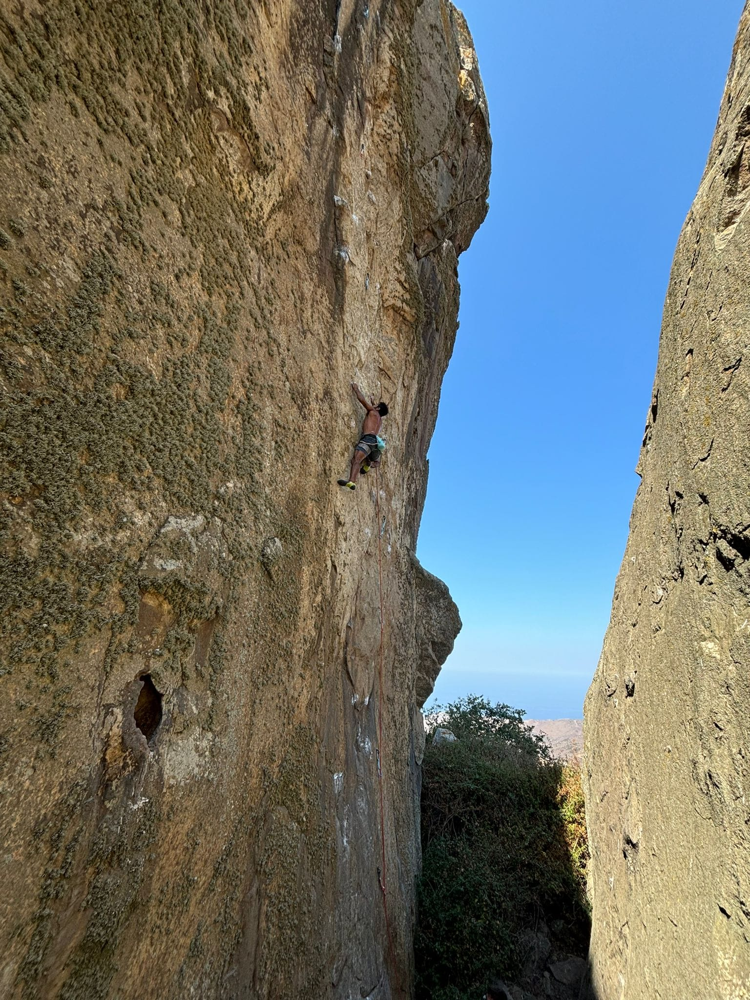
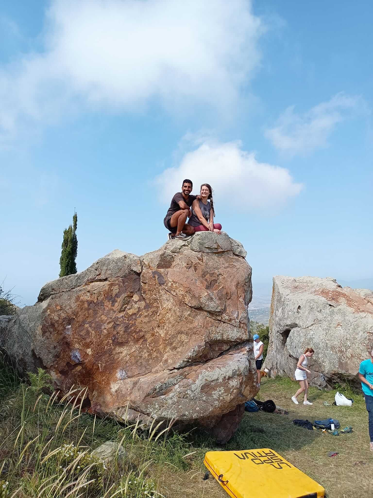
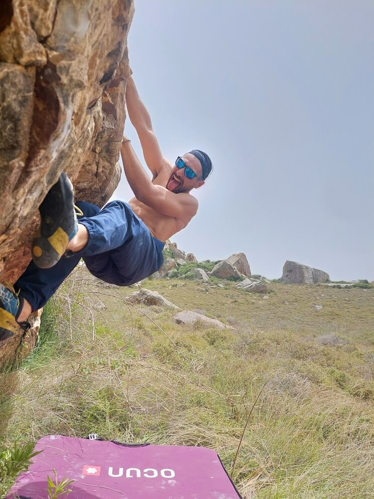
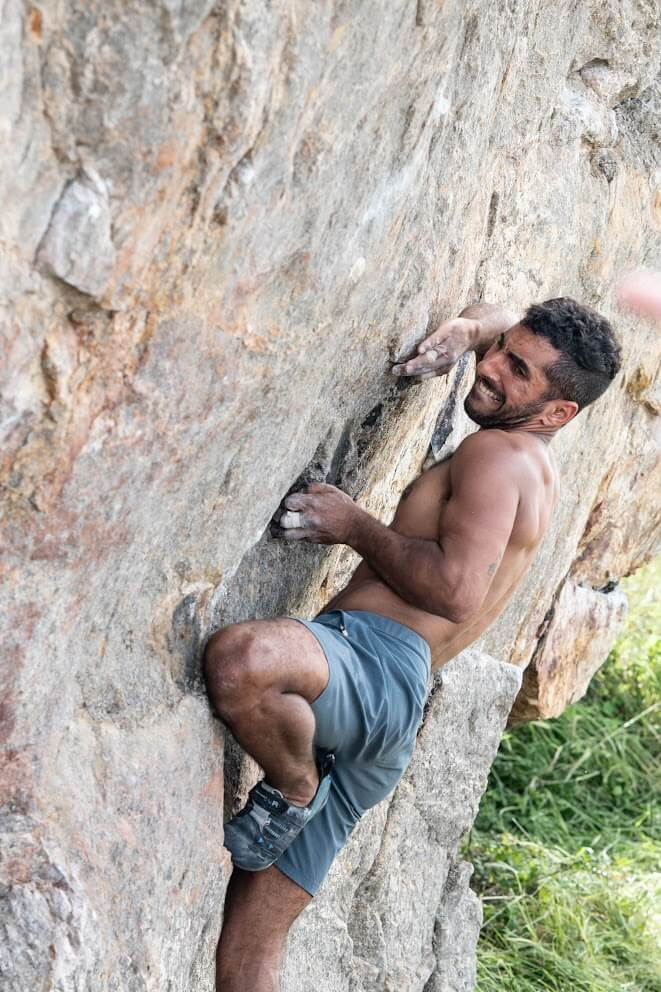
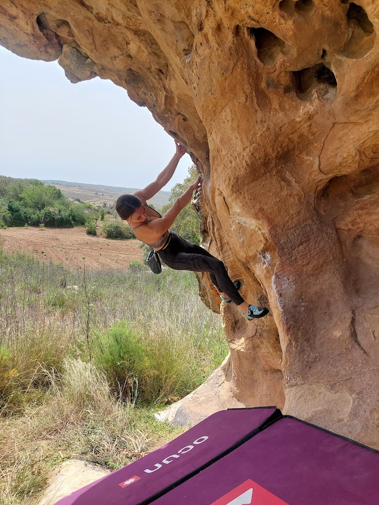
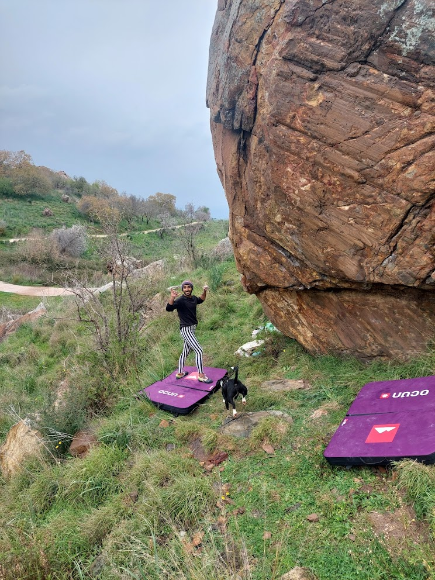

מפה לשם התגלגלתי לכך שהעברתי מספר חודשים באי וכמובן כמו כל מהלך בחיים? איפה הטיפוס נכנס פה בכל הסיפור הזה?
היי, אני יונתן, כיום מתגורר באי, מדריך טיפוס, אבא לטבע ונשוי לבר. הנה לכם מדריך קצר-ארוך שיעשה לכם קצת סדר ויגלה לכם קצת מכל הטוב שיש לקפריסין להציע
קצת לוגיסטיקה
תחבורה: חובה להשכיר רכב, אין אפשרות להסתדר בתחבורה ציבורית, רישיון ישראלי מספיק. שימו לב שהנהיגה פה היא בצד ההפוך. השוואת רכבים להשכרה
לאן טסים: 2 שדות תעופה מרכזיים: לרנקה ופאפוס. כל הטיפוס מתרכז בפאפוס ולכן אם אתם מצליחים למצוא טיסה לשם - הרווחתם! אפשר להזמין הסעה משדה התעופה ישירות למקום הלינה.
איפה ישנים: האופציה הטובה ביותר היא למצוא דירה דרך AirBnb, יש מצב שיתמזל מזלכם ותצליחו למצוא מקום לינה גם בקרבת המצוקים שזה נהדר. חפשו את הבית שלכם ליד הכפרים Ineia ו-Droushia. למי שרוצה להיות קרוב לים ולהנות מ-2 העולמות אפשר לישון גם בפאפוס (קצת יותר חיי לילה ומסעדות) או בפוליס (חופים מדהימים), שני ערים אלו במרחק נסיעה של 45 דקות למצוקים. חיפוש מלונות ודירות בקפריסין
מטבע: המטבע הרשמי בקפריסין (הרפובליקה של קפריסין, החלק הדרומי) הוא אירו (€). השימוש בכרטיסי אשראי וכרטיסי חיוב (Debit Cards) מסוג ויזה (Visa) ומסטרקארד (Mastercard) הוא נפוץ מאוד ומקובל ברוב המכריע של בתי המלון, המסעדות, החנויות הגדולות וסוכנויות השכרת הרכב.
ויזה: אזרחי ישראל ואזרחי האיחוד האירופי (EU) ומדינות ה-EEA אינם נדרשים לוויזה כדי להיכנס ולשהות בקפריסין למטרות תיירות לתקופה של עד 90 יום. אזרחים מכל מדינה אחרת מחויבים לבדוק באופן עצמאי את דרישות הוויזה והאישורים הרלוונטיים מול שגרירות קפריסין המקומית או משרד החוץ הקפריסאי.
ציוד: מי שמעוניין להשכיר ציוד טיפוס ובולדרינג, ניתן לפנות אליי - לחצו כאן
קירות הטיפוס בקפריסין
קפריסין מציעה מספר קירות טיפוס פנים איכותיים המפוזרים ברחבי האי. בשנים האחרונות נפתחו מתקנים חדשים ומודרניים המציעים אפשרויות טיפוס מגוונות למטפסים בכל הרמות. הקירות ממוקמים בעיקר בערים הגדולות ומציעים מקום מצוין לאימון, פגישת מטפסים מקומיים ושמירה על כושר בימי גשם או חום קיצוני.
ניקוסיה
- RedPoint - המתקן החדש והמודרני ביותר באי, נפתח ב-2022. משולב עם מתחם פארקור ומציע חוויית טיפוס מקצועית עם Moonboard, Campus board, חדר אימונים מאובזר, ומגוון רחב של מסלולים. הצוות המקצועי והידידותי יעזור לכם להתקדם. מתאים למתחילים ולמטפסים מנוסים כאחד.
- Ungravity - קיר טיפוס ותיק שנפתח ב-2019, ממוקם בשכונת סטודנטים ומציע אווירה נעימה וקהילתית. מקום מצוין להכיר מטפסים מקומיים ולהצטרף לקבוצות טיפוס. מחירים סבירים ואווירה ידידותית במיוחד למטפסים חדשים.
- Rockstar Climbing Gym - המתקן החדש ביותר בניקוסיה, נפתח ב2025, קיר טיפוס מודרני ומאתגר עם מסלולים מגוונים, ציוד מתקדם ואזור בולדרינג. מושלם למי שמחפש אתגר חדש בבירה.
לימסול
- Limassol Climbing Club (LLC) - קיר טיפוס אינטימי בלימסול, מציע אפשרות נוחה למי שנמצא באזור לשמור על כושר ולהכיר את קהילת המטפסים המקומית. אידיאלי לאימונים קבועים ופגישה עם מטפסים מהאזור.
טיפ מועיל: מחיר מנוי חודשי בקירות נע בין 50-70 יורו, ורוב הקירות מציעים גם כניסות בודדות. מומלץ להצטרף לקבוצות הפייסבוק של המטפסים המקומיים - זו הדרך הטובה ביותר להכיר שותפים לטיפוס בטבע ולקבל מידע מעודכן על פתיחת מסלולים חדשים.
רקע להבנת ענייני המצוקים באי
קפריסין נשלטה ע"י האנגליים ובה חיו זה לצד זה קפריסאים וטורקים (מזכיר משהו, לא?). בשנת 1974 חלה הפיכה באי ע"י הטורקים שרצו שיכירו בהם כמדינה ("מבצע אטילה" למתעניינים) והתוצאה, המדינה חולקה כך שהרפובליקה הטורקית שולטת ב-37% מהחלק הצפוני של האי, ולה מטבע, שפה, וסממנים אתניים משלה. ולקפריסאים נשאר מטען ריגשי, סופלקי ו-63% מהמדינה.
הם נוהגים לקרוא לחלק הטורקי: "החלק הכבוש של צפון קפריסין" ולמעשה מצאתי המון דברים דומים בין המצב בארץ למה שקורה פה. אבל הרבה יותר light אפשר לומר. אבל לא באנו לדבר על פוליטיקה.
ומפה אנחנו קופצים לסקירת המצוקים שאם הבנתם נכון, אנחנו נחלק את זה למצוקים בקפריסין עצמה (דרום) ובחלק הצפוני של קפריסין ששייך לטורקים. הדגש יהיה במצוקים המרכזיים בלבד.
מתכננים לטפס בקפריסין?
הזמינו ציוד טיפוס איכותי או קבלו את הגייד בוק המקיף
החלק הצפוני של קפריסין
ראשית כדי לעבור לחלק זה יש לעבור גבול ולהציג דרכונים. לא תהליך מסובך אבל יכול לקחת חצי שעה אם יש פקקים בצ'קפוינט. המטבע המקומי שם הוא לירה טורקית אבל הם מקבלים כמובן גם יורו.
החסרון המובהק לתיירים הוא שלעבור עם רכב שכור מהצד של קפריסין לצד הטורקי זה לא כזה עניין פשוט\משתלם ולכן למצוא מטפסים מקומיים ולהצטרף אליהם תהיה אפשרות מעולה.. מה שבטוח על המצוקים האלה אסור לוותר!
בחלק זה של האי הטיפוס הספורטיבי עולה על כל דימיון ומציע אתרים שלא נופלים מיעדים עולמיים! עם מסלולים ארוכים, טופות, מערות וסלע איכותי ביותר. אני רושם פה חלק מהמצוקים שאסור לפספס, יתר המידע כמו דרכי הגעה, פירוט מסלולים תוכלו למצוא בגיידבוק (ניתן להזמין אליי לאיסוף)


coco jumbo 7c, Buffa wall photo:@stef47
1. Buffawall
שוכן בלב של עמק ירוק, פסטורלי מאוד עם נוף כמובן לים הפתוח. המסלולים רובם כפייסים חלקים וארוכים עד 40 מטר. כ-15 מסלולים נכון להיום. רובם מסלולים קשים (7 ומעלה) שנפתחו ממש לאחרונה (2022). יש מספר טופות במצוק מה שמוסיף עניין לטיפוס!
2. Garga-Suyu
אחד המצוקים הותיקים באי, המון מסלולים, סלע איכותי, דירוגים מגוונים מאוד. חסרון בולט זה שהמצוק קרוב לכביש ויש מעט רעש.
3. Kozan Koy / Larnaka of Lapithos
שוכן לצד הכפר Kozan ולצידו עוד 2 מצוקי ספורט משניים. סגנון ורטיקלי עם מעט טופות. גיוון בדירוגים כך שכל אחד יוכל למצוא לו פרוייקט נחמד.

4. Goat House
כנראה המצוק הטוב ביותר בחלק הצפוני! מצוי באזור הרי קירניה, מציע שילוב ייחודי של טיפוס ספורט וטראד. המצוק מתאפיין בסלע איכותי ומסלולים טכניים שמאתגרים מטפסים בעלי ניסיון. הגישה למצוק כוללת הליכה קלה דרך שטח פסטורלי עם נוף פנורמי של החוף הצפון-מערבי. המצוק מציע אמפיתיאטרון טבעי עם מסלולים בדירוגים מגוונים, מה שהופך אותו למקום אידיאלי לסשן טיפוס של יום שלם. שעות הצל הטובות הן בבוקר ובשעות אחר הצהריים המאוחרות, והמקום מתאים במיוחד לעונות האביב והסתיו.
החלק הדרומי (קפריסין)
1. Diarizous
מצוק ידידותי ומיוחד במינו. קשת רחבה של דירוגים ומתאים מאוד למתחילים. יש שני מצוקים זה מול זה במרחק של 10 צעדים ככה שאפשר לטפס כל היום! תמיד יש צל. הגישה קלה (דקה הליכה) ויש נחל זורם במרחק של דקת הליכה נוספת במורד הכביש. סגנון טיפוס: ברובו פייסי.


Taxhidi Mialou 7b+, Diarizous
2. Episkopi
כפר עתיק ליד פאפוס (לא להתבלבל יש כפר נוסף באותו שם ליד לימסול) שלמרגלותיו מצוק היסטרי של 60 מטר!! נשמע טוב מידי? צודקים. המצוק הזה תחת איסור טיפוס משיקולים של פוליטיקה וציפורים (לא נכנס לזה כעת, נושא טעון מאוד בקרב ציבור המטפסים פה).
אבל לא לדאוג! בצמוד למצוק ההיסטרי יש את המצוק "בייבי" שלו, בגובה של 35 מטר עם כל מסלולים בכל הסגנונות וכל הדירוגים. המצוק יושב כמעט כולו בסביבת עצים ענקיים שנותנים צל לאורך רוב שעות היום. מומלץ להגיע בשעות הבוקר המאוחרות. אפשר לשבת אחרי זה לקפה בבית קפה המקומי (1.5 יורו) או בהפסקה בין סשנים.


OverDose 8a, Episkopi
3. Ineia & Drousia
צמד הכפרים היפייפיים "אינייה-דרושיה" שמציע ממלכה אינסופית של מאות בולדרים (!!) ומספר מצוקי ספורט שהמפורסם והמעולה בינהם הוא Gerakopetra. אבן חול באיכות גבוה מאוד וכמובן שבסוף כל יום טיפוס מומלץ לקפוץ לאחד הכפרים הציוריים ולאכול בטברנה מקומית עם אוכל מזרח תיכוני טעים במחיר שווה לכל נפש. רושם לכם על מצוק הספורט המרכזי Gerakopetra, ייתר המצוקים באזור תוכלו למצוא בגייד.

Gerakopetra
מצוק מרשים, עשיר במסלולים ארוכים בכל הדירוגים עם נוף מהפנט לים התיכון ולשדה הבולדרים העצום שפרוש בכל עבר. בעל 2 מפנים ניצבים מה שמאפשר טיפוס מהבוקר עד הצהריים המאוחרים. גישה כמובן קלה ביותר (5 דק הליכה) כמו שהקפריסאים אוהבים.


Nomos Varititas 7a, Gerakopetra
בולדרינג - פנינה נסתרת של המזרח התיכון
Ineia & Drousia - פה הכל קורה
אזור אינייה-דרושיה הוא אחד הסודות הגדולים של הטיפוס במזרח התיכון - יותר מ-300 בולדרים (ומעל 700 בעיות) באיכות עולמית מפוזרים על פני שטח של כמה קילומטרים רבועים, עם אבן חול קומפקטית ייחודית שמזכירה את הסלע של פונטנבלו אבל עם חום ושמש של הים התיכון.
בתחום הבולדרים יש גישה ומידע דרך אפליקציית 27crags (בתשלום) שם ניתן לראות מידע על המסלולים ודרכי הגעה. זה מרגיש ממש כמו ספארי עם מערכת שבילים\כבישים פנימית שאיתה אפשר לעבור בין בולדר לבולדר וכמובן לעשות קפינג באיזו פינה טובה שאתם מוצאים (לא חוקי בקפריסין אבל כל עוד מכבדים את הטבע הכל נעשה בשלום).
הפיתוח נמשך בקצב מהיר! כל חודש מתווספים בולדרים חדשים ע"י המטפסים המקומיים והבינלאומיים שמגלים את הפוטנציאל האדיר של האזור. כיום הדירוג הגבוה ביותר של בולדר באי נמצא על 8a (V11 בסקאלה הצרפתית), מה שמעיד על הראשוניות של הספורט ועל הפוטנציאל האדיר של המקום. ישנם עשרות פרויקטים פתוחים בדירוגים גבוהים שמחכים למי שירצה להשאיר את חותמו.
מחשבון שעות צל
אחד האתגרים בטיפוס בקפריסין הוא החום, במיוחד בקיץ. פיתחתי מחשבון שעות צל ייעודי שעוזר למטפסים לדעת בדיוק מתי יהיה צל בכל מצוק לפי התאריך והשעה. הכלי זמין בחינם לכל המטפסים ויכול לעזור לכם לתכנן את יום הטיפוס בצורה מושלמת.
לחץ למחשבון שעות הצלבתור מטפס שהוא לא בולדריסט אני ממש ממליץ על האתר הזה – הוא ממש מיוחד. השילוב של הסלע האיכותי, הנופים המרהיבים לים ולעמקים, והאווירה השלווה הופכים את זה לחוויית בולדרינג ייחודית שקשה למצוא במקומות אחרים.





בולדרינג באזור Ineia & Drousia
מתכננים חופשת בולדרינג?
גייד בוק לבולדרינג בקפריסין בהכנה! הגייד המקיף לבולדרינג צפוי לצאת בשנת 2026. בינתיים, כל המידע והמסלולים זמינים באפליקציית 27crags.
טופו בולדרינג זמני - הורדה חינמית!
עד לצאת הגייד בוק המלא, זמין טופו זמני עם מידע על הבולדרים העיקריים באזור. ההורדה חינמית לחלוטין!
הורדת טופו בולדרינג בחינם
השאירו את האימייל שלכם ונשלח לכם את הטופו מיד!
צריכים קראשפדים לבולדרינג? השכירו ציוד בולדרינג איכותי ישירות ממני!
מחפשים פעילות ליום מנוחה או למשפחה? בדקו פעילויות ואטרקציות בקפריסין דרך Klook.
חשוב לדעת
המצוקים שתוארו כאן הם רק חלק קטן מהאפשרויות הקיימות בקפריסין. הטיפוס באי נמצא בפיתוח מתמיד עם מסלולים חדשים שנפתחים באופן קבוע, מצוקים נוספים שמתגלים ואזורים חדשים שמתפתחים. הקהילה המקומית פעילה ונלהבת, והפוטנציאל לטיפוס באי עדיין רחוק מלהתממש במלואו. מומלץ להתעדכן באינטרנט, ליצור קשר עם מטפסים מקומיים ולהצטרף לקבוצות הפייסבוק של קהילת הטיפוס הקפריסאית לקבלת מידע עדכני על פיתוחים חדשים ותנאים.
רוצים להתחיל את המסע שלכם בקפריסין?
אני אשמח להדריך אתכם במצוקים, לעזור בתכנון הטיול ולחלוק את הידע המקומי
צור קשר💬 תגובות ושאלות
שתפו את החוויות שלכם, שאלו שאלות או הוסיפו טיפים נוספים למטפסים!
הוסף תגובה
התגובות נשמרות באופן מקומי ונשלחות אליי לאישור לפני פרסום
תגובות קודמות
טוען תגובות...